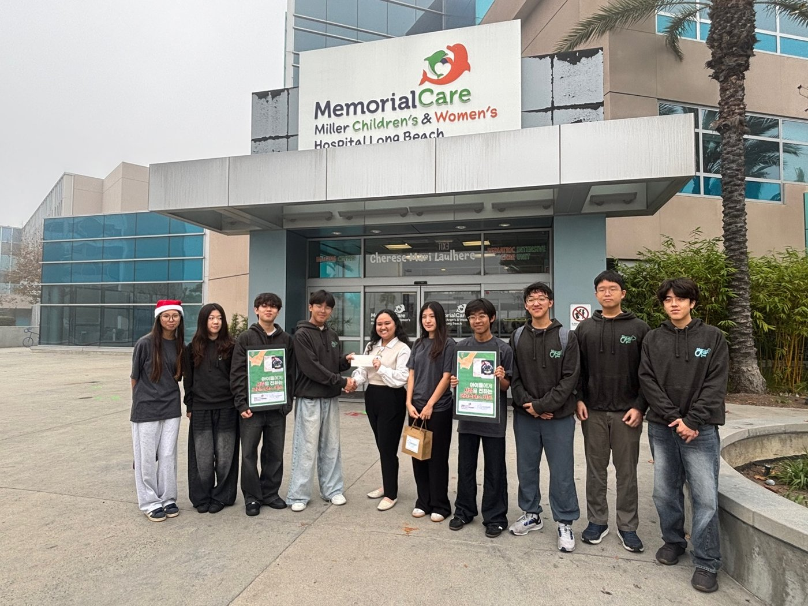
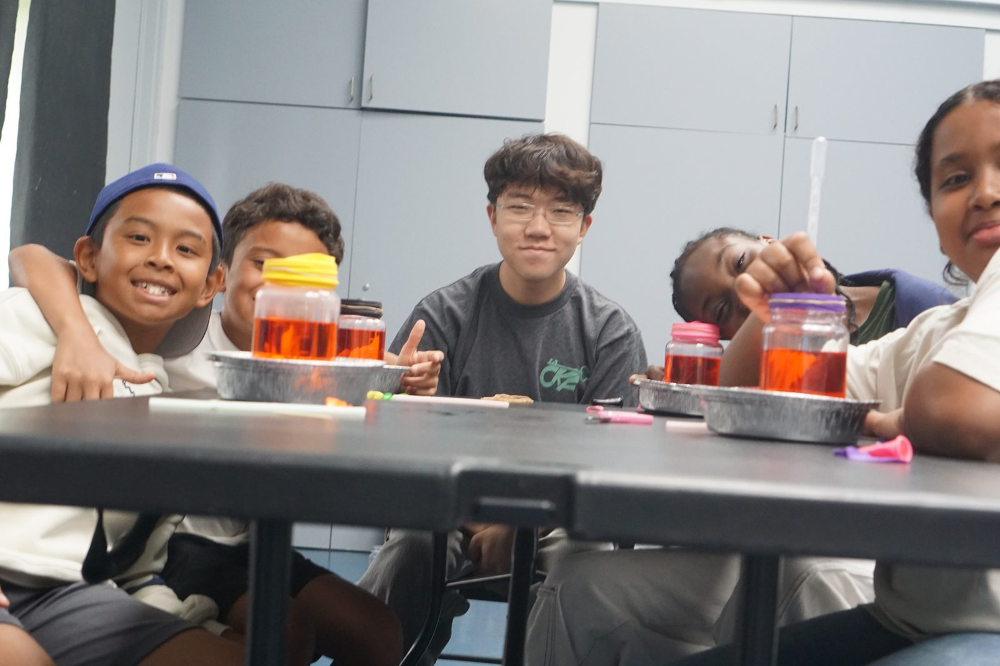
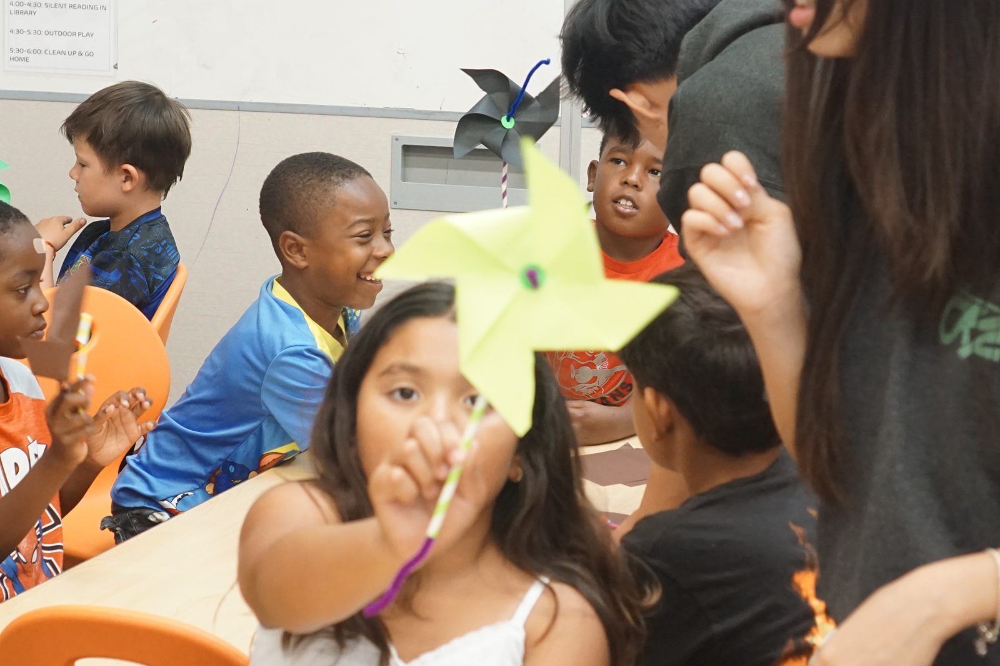

I still test the lessons myself. One of our shyest kids once tugged on my shirt to ask what we were doing next week, and another one yelled “bye, science guy!” on his way out the door. I think about those two a lot more than I think about the hour count.
CKF is much bigger than my part of it. While I am packing kits, our Health Division is running blood pressure checks at a county health fair, the Art Division is tying handmade bracelets onto the wrists of kids in cancer treatment, and the English Division is teaching parents the language their children already speak. Most of it happens in rooms I am never in, run by students I recruited and then got out of the way of.

One of those rooms: the Art Division at Miller Children’s & Women’s Hospital
See the CurioCrate program on the CKF site ↗connectkeyfoundation.org · Instagram @connectkeyfoundation · @ckf.curiocrate
In 2023 a few friends and I were on a call that went well past 1am, mostly complaining. A lot of the volunteering we’d done was showing up to jobs nobody needed us for. By the end of the call we’d decided to start our own group and let students design the programs. That became Connect Key Foundation. We had already been volunteering together before there was a name for it; CKF was incorporated as a 501(c)(3) in Cerritos in November 2023.
CKF now has five divisions (STEM, Health, Art, English, and Outreach), about 150 student volunteers, and 17+ partners including the YMCA, Discovery Cube, Miller Children’s Hospital, and the Government of El Salvador. Across all divisions, our volunteers have logged more than 50,000 service hours.
CurioCrate is the STEM Division’s hands-on science program, and it’s where most of my time goes. When I became STEM Division president it was a curriculum on paper, without a regular place or schedule to teach it.
I built our partnership with the YMCA, which gave CKF its first permanent STEM lab at the Fairfield Family YMCA. In 2026 CurioCrate became an official YMCA STEM vendor, with sessions running through the summer, fall break, and winter at Fairfield and the Wrigley Youth Center in Long Beach. More than 500 students have now come through CurioCrate, at the YMCA, in weekly after-school sessions at Leal Elementary, at a science camp at Burbank Elementary, and at Discovery Cube.
This year CurioCrate kits started going to classrooms in El Salvador through an official partnership with the Salvadoran government. I put together the student team for that proposal, and we wrote it together.
A CurioCrate session


Two lessons from summer 2026: heart pump models, and catching wind
None of that works if I have to be in the room. So most of my job turned into making lessons that survive a first-time instructor: testing each experiment until it works every time, then writing the supply list, safety steps, and instructor notes that go in the box. I recruit and train the student instructors, now more than 50, who teach from our 40+ original curriculum modules.
The first students I trained teach their own sessions now. Some are Whitney classmates, some are younger siblings who had never cared about science before they had to explain it to a seven-year-old.
The money comes from outside. Society for Science gave CurioCrate a $5,000 STEM Action Grant in 2024, and the Vasant and Prabha Rathi Foundation added $1,500 in 2026. For both, I organized the team and we wrote the applications as a group. Across all divisions, CKF has received more than $30,000 in grants and support, and the office of U.S. Congressman Derek Tran has formally recognized our work.
Case Study: The Lesson That Failed on the Way to Class
The problem. A lesson only counts if a volunteer who has never taught it can run it in a room of 25 kids. Most of my testing happens at my house, with me as the first student to get it wrong.
Failures. Choosing materials took more tries than I want to admit. Wrong quantities, wrong timing, a reaction that works once and never again. I demoed one experiment for the whole team over Zoom from my backyard, and it finally worked. It also left our patio furniture covered in the evidence. My mom has opinions about that week.
The day of. The lesson called for a solution mixed ahead of time. The volunteer bringing the materials brought the raw powder instead. Twenty minutes before class, we had the wrong version of the experiment.
The fix. We taught slime instead. The kids were louder and happier than they would have been with the lesson we planned, which was a strange thing to be relieved about.
What I took from it. The experiment was never the fragile part. The prep was. Anything a person has to remember on the drive over will eventually be forgotten, so it has to be in the box or in the instructor notes. That is the standard I build kits to now.